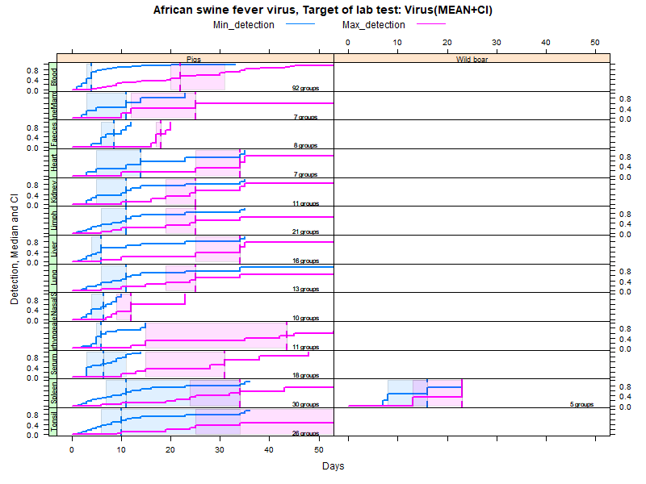
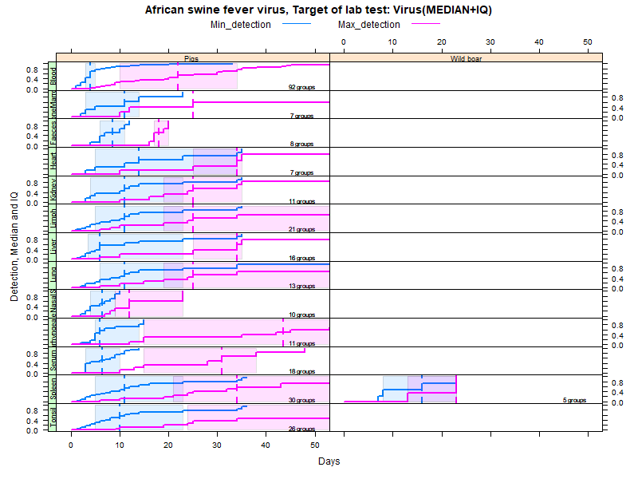
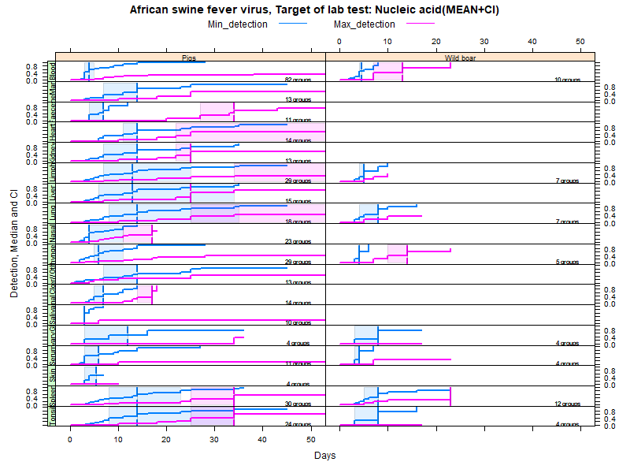
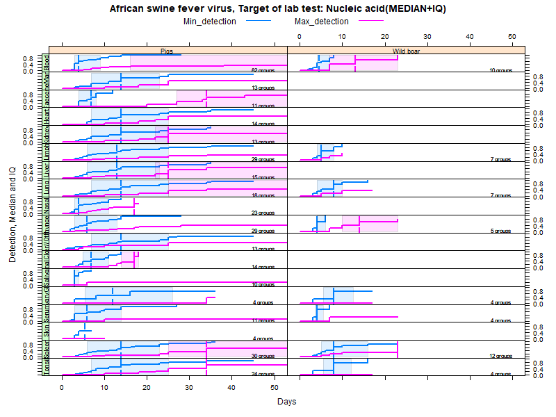

The systematic literature review included a total of 119 articles, which combined presented evidence from 231 animal groups subjected to experimental infections with this agent. Host-to-host transmission was reported in 17 animal groups, and investigated but not found in 4 animal groups. Host-to-host transmission was not investigated or not explicitly reported for 210 animal groups.
The systematic literature review included a total of 119 articles, which combined presented evidence from 231 animal groups subjected to experimental infections with this agent. Transplacentary transmission was reported in 0 animal groups, and investigated but not found in 1 animal groups. Transplacentary transmission was not investigated or not explicitly reported for 230 animal groups.
Kaplan-Meier curves were fit to the data in order to estimate parametric confidence intervals (CI) and interquartile ranges (IQ) that explicitly take into account the data censoring issue (lack of information about true maximum when experiments ended while virus was still detectable). Further below you will find a table with the numerical values.
Meta-analysis have been applied separately for VIRUS ISOLATION, detection of genetic material (DNA/RNA), and detection of virus ANTIGENS in species/matrices combinations where data was available for at least FOUR animal groups. The median minimum and maximum days during which virus/genetic material were detected in other matrices are listed in a table further below.


LCL and UCL stand for the lower and upper control limit of a 95% confidence interval accounting for censoring (lack of information about true maximum when experiments ended while virus was still detectable).
N.groups is the number of animal groups from which experimental infection data was available.
| species | matrix | parameter | n.groups | median | LCL | UCL | IQ1 | IQ3 | |
|---|---|---|---|---|---|---|---|---|---|
| 2 | Pigs | Blood | Min_detection | 92 | 4 | 3 | 4 | 3 | 5 |
| 3 | Pigs | Blood | Max_detection | 92 | 22 | 20 | 31 | 10 | 34 |
| 4 | Pigs | BoneMarrow | Min_detection | 7 | 11 | 3 | NA | 3 | 14 |
| 5 | Pigs | BoneMarrow | Max_detection | 7 | 25 | 12 | NA | 12 | NA |
| 6 | Pigs | Faeces | Min_detection | 8 | 8.5 | 6 | NA | 6 | 11 |
| 7 | Pigs | Faeces | Max_detection | 8 | 18 | 17 | NA | 17 | 20 |
| 8 | Pigs | Heart | Min_detection | 7 | 14 | 5 | NA | 5 | 34 |
| 9 | Pigs | Heart | Max_detection | 7 | 34 | 25 | NA | 25 | 35 |
| 10 | Pigs | Kidney | Min_detection | 11 | 11 | 5 | NA | 4 | 23 |
| 11 | Pigs | Kidney | Max_detection | 11 | 25 | 19 | NA | 19 | 35 |
| 12 | Pigs | Limph | Min_detection | 21 | 11 | 6 | NA | 5 | 23 |
| 13 | Pigs | Limph | Max_detection | 21 | 25 | 19 | NA | 19 | 99 |
| 14 | Pigs | Liver | Min_detection | 16 | 6 | 4 | NA | 3.5 | 23 |
| 15 | Pigs | Liver | Max_detection | 16 | 34 | 25 | NA | 25 | 35 |
| 16 | Pigs | Lung | Min_detection | 13 | 11 | 6 | NA | 6 | 23 |
| 17 | Pigs | Lung | Max_detection | 13 | 25 | 19 | NA | 19 | 99 |
| 18 | Pigs | NoseNasalSwab | Min_detection | 10 | 6.5 | 4 | NA | 4 | 9 |
| 19 | Pigs | NoseNasalSwab | Max_detection | 10 | 12 | 9 | NA | 9 | 23 |
| 20 | Pigs | OroparhyngealSwab | Min_detection | 11 | 6 | 5 | NA | 5 | 14 |
| 21 | Pigs | OroparhyngealSwab | Max_detection | 11 | 43.5 | 15 | NA | 15 | 63 |
| 22 | Pigs | Serum | Min_detection | 18 | 6.5 | 3 | 11 | 3 | 10 |
| 23 | Pigs | Serum | Max_detection | 18 | 31 | 15 | NA | 15 | 38 |
| 24 | Pigs | Spleen | Min_detection | 30 | 11 | 7 | 34 | 5 | 23 |
| 25 | Pigs | Spleen | Max_detection | 30 | 34 | 24 | NA | 21 | 65 |
| 26 | Pigs | Tonsil | Min_detection | 26 | 10 | 6 | 34 | 5 | 23 |
| 27 | Pigs | Tonsil | Max_detection | 26 | 65 | 25 | NA | 24 | 99 |
| 28 | Wild boar | Spleen | Min_detection | 5 | 16 | 8 | NA | 8 | 23 |
| 29 | Wild boar | Spleen | Max_detection | 5 | 23 | 13 | NA | 13 | 23 |


LCL and UCL stand for the lower and upper control limit of a 95% confidence interval accounting for censoring (lack of information about true maximum when experiments ended while virus was still detectable).
N.groups is the number of animal groups from which experimental infection data was available.
| species | matrix | parameter | n.groups | median | LCL | UCL | IQ1 | IQ3 | |
|---|---|---|---|---|---|---|---|---|---|
| 2 | Pigs | Blood | Min_detection | 82 | 4 | 3 | 5 | 3 | 9 |
| 3 | Pigs | Blood | Max_detection | 82 | 73 | 59 | NA | 16 | 94 |
| 4 | Pigs | BoneMarrow | Min_detection | 13 | 14 | 7 | NA | 7 | 23 |
| 5 | Pigs | BoneMarrow | Max_detection | 13 | NA | 25 | NA | 25 | NA |
| 6 | Pigs | Faeces | Min_detection | 11 | 7 | 4 | NA | 4 | 8 |
| 7 | Pigs | Faeces | Max_detection | 11 | 34 | 27 | NA | 27 | 54 |
| 8 | Pigs | Heart | Min_detection | 14 | 14 | 11 | NA | 7 | 25 |
| 9 | Pigs | Heart | Max_detection | 14 | 65 | 22 | NA | 22 | NA |
| 10 | Pigs | Kidney | Min_detection | 13 | 14 | 7 | NA | 7 | 25 |
| 11 | Pigs | Kidney | Max_detection | 13 | 25 | 22 | NA | 22 | 99 |
| 12 | Pigs | Limph | Min_detection | 29 | 13 | 7 | 25 | 6 | 25 |
| 13 | Pigs | Limph | Max_detection | 29 | 99 | 34 | NA | 34 | NA |
| 14 | Pigs | Liver | Min_detection | 15 | 13 | 6 | 34 | 6 | 23 |
| 15 | Pigs | Liver | Max_detection | 15 | 25 | 25 | NA | 22 | 99 |
| 16 | Pigs | Lung | Min_detection | 18 | 14 | 8 | 35 | 7 | 25 |
| 17 | Pigs | Lung | Max_detection | 18 | 99 | 25 | NA | 25 | 99 |
| 18 | Pigs | NoseNasalSwab | Min_detection | 23 | 4 | 4 | 11 | 3 | 11 |
| 19 | Pigs | NoseNasalSwab | Max_detection | 23 | 17 | 11 | NA | 9 | NA |
| 20 | Pigs | OroparhyngealSwab | Min_detection | 29 | 6 | 5 | 11 | 3 | 13 |
| 21 | Pigs | OroparhyngealSwab | Max_detection | 29 | NA | 28 | NA | 17 | NA |
| 22 | Pigs | Other//OtherC | Min_detection | 13 | 14 | 7 | NA | 7 | 25 |
| 23 | Pigs | Other//OtherC | Max_detection | 13 | NA | 25 | NA | 25 | NA |
| 24 | Pigs | RectumAnalCloacalSwab | Min_detection | 14 | 7 | 5 | NA | 5 | 11 |
| 25 | Pigs | RectumAnalCloacalSwab | Max_detection | 14 | 17 | 14 | NA | 14 | 18 |
| 26 | Pigs | Saliva | Min_detection | 10 | 3 | 3 | NA | 3 | 4 |
| 27 | Pigs | Saliva | Max_detection | 10 | 63 | NA | NA | 63 | 63 |
| 28 | Pigs | SalivaryGland | Min_detection | 4 | 12 | 3 | NA | 5.5 | 26 |
| 29 | Pigs | SalivaryGland | Max_detection | 4 | NA | 34 | NA | 34 | NA |
| 30 | Pigs | Serum | Min_detection | 11 | 6 | 3 | NA | 3 | 14 |
| 31 | Pigs | Serum | Max_detection | 11 | 59 | 59 | NA | 59 | 73 |
| 32 | Pigs | Skin | Min_detection | 4 | 5.5 | 3 | NA | 3.5 | NA |
| 33 | Pigs | Skin | Max_detection | 4 | NA | NA | NA | NA | NA |
| 34 | Pigs | Spleen | Min_detection | 30 | 14 | 8 | 23 | 6 | 23 |
| 35 | Pigs | Spleen | Max_detection | 30 | 34 | 25 | NA | 25 | 99 |
| 36 | Pigs | Tonsil | Min_detection | 24 | 14 | 8 | 34 | 7 | 25 |
| 37 | Pigs | Tonsil | Max_detection | 24 | 34 | 25 | NA | 25 | NA |
| 38 | Wild boar | Blood | Min_detection | 10 | 4.5 | 4 | NA | 4 | 7 |
| 39 | Wild boar | Blood | Max_detection | 10 | 13 | 7 | NA | 7 | 23 |
| 40 | Wild boar | Limph | Min_detection | 7 | 5 | 4 | NA | 4 | 8 |
| 41 | Wild boar | Limph | Max_detection | 7 | NA | 7 | NA | 7 | NA |
| 42 | Wild boar | Lung | Min_detection | 7 | 8 | 4 | NA | 4 | 10 |
| 43 | Wild boar | Lung | Max_detection | 7 | NA | 10 | NA | 10 | NA |
| 44 | Wild boar | OroparhyngealSwab | Min_detection | 5 | 4 | 4 | NA | 4 | 6 |
| 45 | Wild boar | OroparhyngealSwab | Max_detection | 5 | 14 | 10 | NA | 10 | 23 |
| 46 | Wild boar | SalivaryGland | Min_detection | 4 | 8 | 3 | NA | 5.5 | 12.5 |
| 47 | Wild boar | SalivaryGland | Max_detection | 4 | NA | NA | NA | NA | NA |
| 48 | Wild boar | Serum | Min_detection | 4 | 4 | 3 | NA | 3.5 | 5.5 |
| 49 | Wild boar | Serum | Max_detection | 4 | NA | 7 | NA | 15 | NA |
| 50 | Wild boar | Spleen | Min_detection | 12 | 8 | 5 | NA | 5 | 16 |
| 51 | Wild boar | Spleen | Max_detection | 12 | 23 | 23 | NA | 10 | NA |
| 52 | Wild boar | Tonsil | Min_detection | 4 | 8 | 3 | NA | 5.5 | 12 |
| 53 | Wild boar | Tonsil | Max_detection | 4 | NA | NA | NA | NA | NA |
As pointed out above, meta-analyses were conducted only when data were available for at least four animal groups. Median values for all detection data collected in the systematic literature review (even when no meta-analyses were performed) are reported in the table below.
N.groups is the number of animal groups from which experimental infection data was available. The entire dataset can be downloaded through the link on the left panel.
| Species | matrix | N.groups | minDetect (MEDIAN days) | maxDetect (MEDIAN days) |
|---|---|---|---|---|
| Pigs | Bladder | 2 | 7.5 | 10.0 |
| Pigs | Blood | 201 | 4.0 | 10.0 |
| Pigs | BoneMarrow | 17 | 7.0 | 12.0 |
| Pigs | Brain | 3 | 5.0 | 9.0 |
| Pigs | Cervix//Ovary//Uterus//Vagina | 1 | 5.0 | 18.0 |
| Pigs | EyeEyeSwab | 2 | 5.5 | 9.0 |
| Pigs | Faeces | 17 | 7.0 | 20.0 |
| Pigs | FoetusStillbirthNeonatus | 3 | 6.0 | 18.0 |
| Pigs | Heart | 18 | 13.5 | 23.5 |
| Pigs | Intestines | 2 | NA | NA |
| Pigs | Kidney | 22 | 10.0 | 19.0 |
| Pigs | Limphonode | 44 | 7.0 | 10.0 |
| Pigs | Liver | 30 | 6.0 | 10.0 |
| Pigs | Lung | 29 | 8.5 | 19.0 |
| Pigs | Muscle | 3 | 5.0 | 7.0 |
| Pigs | NoseNasalSwab | 32 | 4.5 | 11.0 |
| Pigs | not investigated/not given/not relevant | 1 | NA | NA |
| Pigs | NotReported | 10 | 4.0 | 8.0 |
| Pigs | OroparhyngealSwab | 37 | 6.0 | 18.0 |
| Pigs | Other//OtherC | 13 | 13.0 | 25.0 |
| Pigs | PeyerPatches | 1 | 2.0 | 5.0 |
| Pigs | Placenta//FoetusStillbirthNeonatus | 1 | 5.0 | 18.0 |
| Pigs | RectumAnalCloacalSwab | 14 | 7.0 | 12.5 |
| Pigs | Saliva | 8 | 3.5 | 6.0 |
| Pigs | SalivaryGland | 5 | 8.0 | 34.0 |
| Pigs | Serum | 35 | 9.0 | 15.0 |
| Pigs | Skin | 4 | 4.5 | 6.0 |
| Pigs | Spleen | 52 | 7.0 | 10.0 |
| Pigs | Thymus | 5 | 3.0 | 7.0 |
| Pigs | Tonsil | 39 | 7.0 | 12.0 |
| Pigs | Urine | 1 | 7.0 | 7.0 |
| Pigs | Vagina | 3 | 4.0 | 9.0 |
| Wild boar | Blood | 11 | 4.0 | 10.0 |
| Wild boar | BoneMarrow | 2 | 5.0 | 8.5 |
| Wild boar | Faeces | 2 | 6.0 | 7.0 |
| Wild boar | Heart | 2 | 7.5 | 7.5 |
| Wild boar | Kidney | 1 | 3.0 | 10.0 |
| Wild boar | Limphonode | 9 | 7.0 | 10.0 |
| Wild boar | Liver | 3 | 4.0 | 10.0 |
| Wild boar | Lung | 8 | 7.5 | 10.0 |
| Wild boar | Lung//Spleen//Tonsil | 1 | 8.0 | 10.0 |
| Wild boar | Muscle | 1 | 7.0 | 7.0 |
| Wild boar | NoseNasalSwab//RectumAnalCloacalSwab | 1 | 7.0 | 7.0 |
| Wild boar | OroparhyngealSwab | 5 | 4.0 | 14.0 |
| Wild boar | RectumAnalCloacalSwab | 1 | 4.0 | 8.0 |
| Wild boar | SalivaryGland | 5 | 8.0 | 10.0 |
| Wild boar | Serum | 5 | 4.0 | 13.0 |
| Wild boar | Skin | 2 | 5.0 | 8.5 |
| Wild boar | Spleen | 13 | 7.0 | 10.0 |
| Wild boar | Tonsil | 5 | 8.0 | 10.0 |
| Wild boar | Urine | 1 | 7.0 | 7.0 |
This is important information about the data collection process, to keep in mind when interpreting the evidence shown. This information is also available in the info button within the respective sections.
Please note that experimental infections are generally conducted in ANIMAL GROUPS.
Species listed are those for which evidence was available in peer-reviewed literature (in English).
Please note also that:
“Infectious period” cannot be measured directly unless transmission experiments are also conducted. Infection experiments reviewed in the literature actually measured the period of time during which the pathogen/genetic material could be detected in specific body matrices.
All data were recorded per ANIMAL GROUP, not individually. As a result, the periods were recorded in the form of “minimum” and “maximum” values (in days) observed in the group. The values therefore do not reflect a distribution of infectivity in a single animal, but the earliest and latest day in which the pathogen/genetic material could possibly be detected in specific body matrices.
Animals could still be “infectious” on the last day of the experiment. Data in this case is censored - the maximum represents the maximum observed, not the true maximum.
Data collected from matrices other than blood, and calculations of the infectious period were provided above.
Back to duration of the infectious period.
In the left panel you can find information about the entire systematic literature review. The specific references for this agent, and used in this section of the story map are listed below.